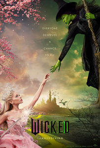

wicked
descriçao
Na Terra de Oz, uma jovem chamada Elphaba forma uma improvável amizade com uma estudante popular chamada Glinda.
Após um encontro com o Mágico de Oz, o relacionamento delas logo chega a uma encruzilhada.
premios
- Oscar de Melhor Figurino
- Oscar de Melhor Direção de Arte
- Prêmio Globo de Ouro: Conquista Cinematográfica e de Bilheteria
- Prêmio AFI: Melhor Filme do Ano
- Satellite Award de Melhor Atriz Coadjuvante no cinema ( Ariana Grande)
- Satellite Award de Melhor Figurino
- Satellite Award de Melhor Som
- Satellite Make-Up Award
- Prêmio BAFTA de Cinema: Melhor Figurino
- Prêmio BAFTA de Cinema: Melhor Direção de Arte
- Costume Designers Guild Award de Melhor Figurino em Filme de Fantasia
- ADG Award de Melhor Design em Filme de Fantasia
- Critic's Choice Movie Award: Melhor Figurino
- Critics' Choice Award: Melhor Direção de Arte
- Critics' Choice Award: Melhor Diretor (Jon M. Chu)
- Eddie Awards for Best Edited Feature Film (Comedy, Theatrical)
- NAACP Image Award for Outstanding Costume Design (Television or Film)
ainda estou aqui A Substancia